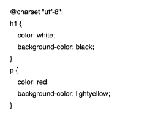
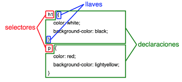

CSS (Cascading Style Sheets)
Las Hojas de Estilo en Cascada (CSS) son una forma de representar el diseño o formato de una página web.
Hay tres maneras de dar estilo a los elementos de una página web:
- En el html, a través del atributo style, afectando solamente al elemento en el que está incluido.
- En el html, a través de la etiqueta style, afectando los elementos seleccionados en toda la página web.
- En las Hojas de Estilo en Cascada (CSS)

Ésta última se puede realizar en la página web (archivo .html) se escribe qué hoja (u hojas) de estilo queremos utilizar a través de la etiqueta link. O en la hoja de estilos (archivo .css) se escribe cómo queremos que sea el estilo de presentación de las etiquetas (color, tamaño, fuente, bordes, márgenes, posición, etc).
Una hoja de estilo es un fichero de texto plano (sin formato) en el que se define el aspecto de las etiquetas de una página web:
 Selectores
En las hojas de estilo CSS, los selectores son la parte de las reglas que indican al navegador a qué elementos se van a aplicar las propiedades incluidas en las declaraciones:
- Selector de tipo: Si se escribe una etiqueta, las propiedades afectan a todos los elementos con etiqueta.
- Selector universal: Si se escribe un asterisco, las propiedades afectan a todos los elementos de la página.
- Selector de clase: Si se escribe una etiqueta seguida de un punto y un nombre de clase (E.e), las propiedades afectan a todos los elementos con etiqueta E cuyo atributo class tenga el valor e.
- Selector de identificador (id): Si se escribe una etiqueta seguida de una almohadilla y un nombre de id (E#e), las propiedades afectan al elemento con etiqueta E cuyo atributo id tenga el valor 'e'.
- Selector de descendientes: Si se escriben dos etiquetas separadas por un espacio (E F) las propiedades afectan a los elementos con la segunda etiqueta (F) contenidos dentro de la primera etiqueta (E), aunque haya etiquetas intermedias.
- Selector de hijos: Si se escriben dos etiquetas seguidas separadas por un signo "mayor que" (E > F), las propiedades afectan a los elementos con la segunda etiqueta (F) contenidos dentro de la primera etiqueta (E), pero no lo selecciona si hay etiquetas intermedias entre ellos.
- Selector de consecutivos: Si se escriben etiquetas separadas por un signo "más" (E + F), las propiedades afectan únicamente a los elementos con la última etiqueta (F) que van justo después de un elemento con la etiqueta (E).
- Selector de grupo: Los selectores de grupo, son en realidad varios selectores 'unidos' para darles el mismo estilo a todos los elementos seleccionados. En este caso, no se dará estilo solamente al último elemento, sino a todos.